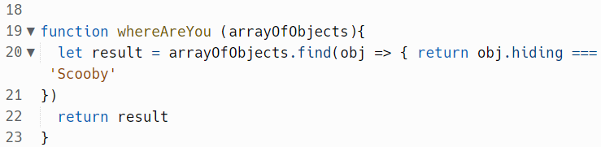
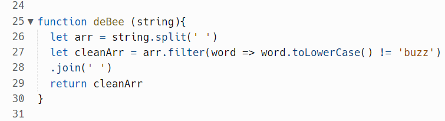

1. The relatively simple problem I was blocked on for quite some time in the last
methods exercise was the one called whereareyou. The job was to write a bit of code that
gives us the object from a list of objects that has the word 'Scooby' in it.
This seems quite simple, and ultimately it was, but it involved using a new function,
find, to sort through the object and find the property. To do that, the hints told me to look
up the 'find' function which I had never seen or used before. It took googling it a few times
and seeing a few different examples to see how it might be used in this particular context. None
of the examples I found exactly matched this problem as often the examples were to find something
to then immediately transform it, not return the whole object.
I started to panic about not seeing how it could be applied here. But I persisted by calming down
and breaking the problem down. I didn't fully understand the syntax but I first set up the function
just to find the property 'Scooby' and consolelogged it out. That seemed to work.
What I couldn't figure out was how to get it to return the whole object that it was part of. I racked
my brain but started to feel despondent as nothing came to mind. I looked up other peoples' enquiries
in the tech support channel but people seemed to have trouble with another part of the problem not this.
Eventually, I followed the rubber ducky message by breaking it down and explaining to an imaginary
friend what I needed to do. A possible answer came into my mind at that point to rather than return
the property key to try putting in the function immediately return obj.hiding (looking up the property
within that key). To my amazement that worked! This is what it looked like:

2. Given the amount of time and difficulty I had with that one, I was expecting the following challenge
deBee to be even more time-consuming and challenging. However, since the first part involved converting the strings
into an array, something I had learned how to do in the first one, I did that without a hitch. Being more familiar
with the shorthand notation of functions from the Scooby example above, I was also much more quickly able to
understand and utilise the filter method. Nonetheless, I greatly surprised myself by filling in the syntax (which
didn't match the examples online once more) correctly in the first go and delivering a very elegant solution using !=
.toLowerCase and join(' ') altogether in a efficient bit of code. It felt great! Even if I still didn't 100% understand
the logic, I felt I was a lot closer than in the previous exercise. I learned from that that with practice and a degree
of faith I would probably intuitively develop an understanding of the logic, like learning any new language.
This is what it looked like:

3. My confidence with different problem solving techniques